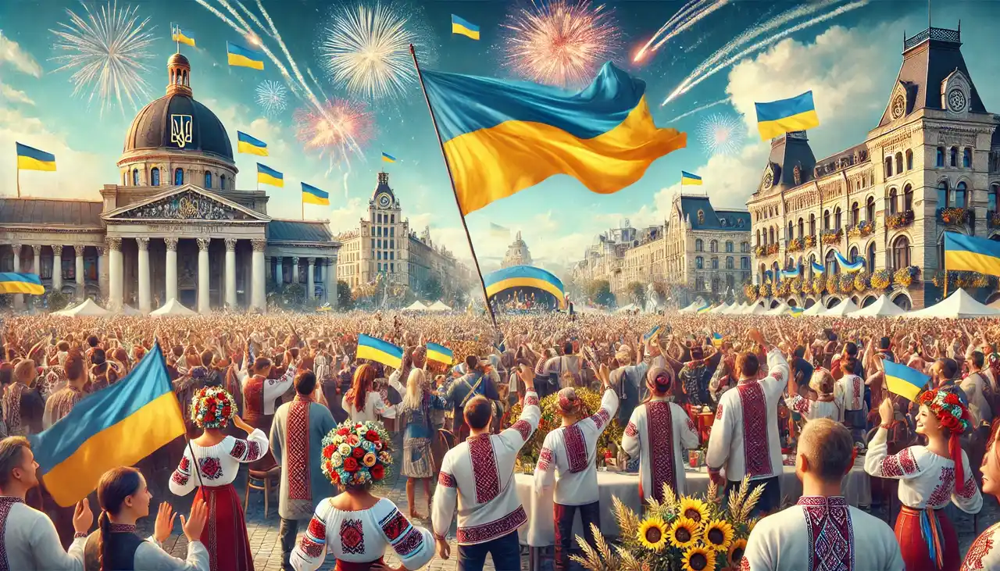

Malanka (Ukrainian New Year)
Malanka, also known as the Ukrainian New Year, is celebrated on January 13th. This festival is full of vibrant traditions, including colorful costumes, folk music, and humorous performances. It marks the transition from the old year to the new and reflects Ukraine's deep-rooted connection to its folk heritage.
Ivana Kupala
Ivana Kupala is a midsummer festival celebrated on the night of July 6th to 7th. The festival features bonfires, flower wreaths, and water rituals. It's a celebration of nature, love, and the summer solstice, with many young people jumping over fires to ensure good health and fortune.
Independence Day
Independence Day, celebrated on August 24th, commemorates Ukraine's declaration of independence in 1991. The day is marked by parades, concerts, and national pride. It's a time for Ukrainians to reflect on their history and celebrate their freedom with cultural performances and community events.
Christmas
Ukrainian Christmas, celebrated on January 7th, follows the Julian calendar. It's a deeply spiritual holiday, with traditional customs like Sviata Vecheria (Holy Supper), caroling, and Didukh, a symbolic sheaf of wheat representing ancestors. Families gather to share twelve symbolic dishes and honor their heritage.